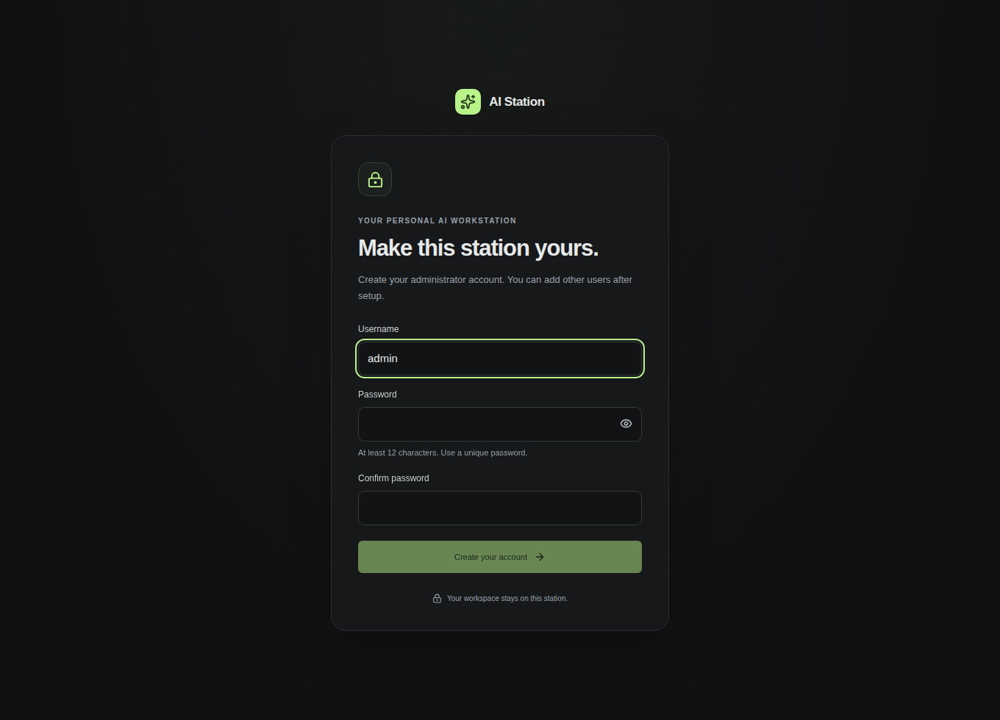

GETTING STARTED · v{{VERSION}}
From download
to your own AI.
Install the app, make the station yours, then choose what you want to create. You don't need to install Python, Node or a separate model server.
An early release, built with your feedback. macOS is not supported yet. Read the release notes and current test coverage before installing.
Before you start
Use 64-bit Windows 11, or Windows 10 21H2/22H2 with KB5020030 or a newer cumulative update. CPU virtualization must be enabled. Windows 10 installation, login and worker execution have CPU-only qualification; physical Windows GPU testing remains pending.
-
Open the official installer
Download the
Setup.exeabove and open it. AI Station installs for your Windows user. You don't need Docker Desktop or your own Ubuntu installation.The installer is currently unsigned. Windows may show an unknown publisher, and some security policies block unsigned apps. Check that your file came from the official release. Compare it with SHA256SUMS on GitHub if you want to verify the download. Do not disable Windows security protections.
-
Let setup check Windows support
Open AI Station after installation and follow its primary setup action. It prepares a dedicated private Linux environment using WSL2. If Windows Update or Windows support is required, follow the app's instructions. Approve the genuine Windows permission prompt only when you choose to install that support.
-
Restart only when Windows asks
If Windows requests a restart, save your work and restart the computer. Reopen AI Station from Start afterward and continue setup. Existing WSL distributions and their files are kept separate.
-
Start creating
When the station is ready, it opens your browser. Continue with your account and first model below. Keep the desktop app running while you use the station.
Before you start
The Linux desktop package targets Ubuntu 24.04 on an x86-64 PC. It needs Docker Engine, Docker Compose and Zenity. Use your existing Docker setup; AI Station does not replace unrelated services or GPU drivers. A GPU is optional for starting the app, but model requirements vary.
-
Install the desktop package
Download the
.debabove. Open it with your Ubuntu package installer and choose Install.No package installer opens?
Open a terminal in the folder containing your download, then run:
sudo apt install ./AI-Station-{{VERSION}}-linux-amd64.debThis installs the desktop package. Docker Engine and Compose must already be available; AI Station does not install or replace them silently.
-
Open AI Station from Applications
The desktop launcher prepares its private workspace and starts the app. If Docker access needs attention, follow the specific explanation shown by setup. Do not change permissions on the Docker socket or run the whole station as root.
-
Continue in your browser
The app opens its local address automatically, normally
http://127.0.0.1:8765. If that port is already used, the desktop app chooses another free local port. Use the link it opens.
03 / MAKE IT YOURS
Your account.
Your models. Your rules.
-
Create your administrator account
Choose a username and a unique password of at least 12 characters. This account manages the station; you can add other users afterward. Open setup through the desktop launcher so the private first-run link is available.


-
Choose what you want to do
Follow the in-app setup for local chat or another capability. The model catalog shows download sizes, licenses and hardware advice before transfer. Start with a recommended model that fits your machine. Larger does not always mean better for your hardware.
-
Download a model, then send your first message
Model files can be large. Wait for the app to finish the download and setup, then select the ready model in Chat. Ask a question. The same conversation can use available tools; Images, Video, Audio, Avatars and Agents remain available as dedicated workspaces.
Local inference stays on your machine. Optional web tools contact websites, and cloud providers contact their selected service when you enable them. A model download needs internet access; local generation does not require cloud tokens.
KEEP YOUR WORK
Stop, reopen,
or update.
Close the tab, keep the station working
Closing your browser tab does not shut down the app. Use the desktop controls to stop AI Station when you want to release its resources. Reopen it from Start or Applications next time.
Updating an existing installation
For the current published release, use the newer official installer and its preserving update flow. Finish active work first. Keep your existing application data and installation location; uninstalling or deleting data is not an update step.
One-click updates are being qualified. Supporting desktop clients will offer Settings → Updates → Update and restart. The action is offered only when that native installation supports it. Earlier clients need an installer update once before they can use this feature.
Your data stays yours
Accounts, conversations, agents and generated files belong to the station's persistent data folder. Use the app's backup controls before major changes. An installed app's private configuration identifies its data; don't move or replace that folder while the station is running.
04 / IF SOMETHING GETS IN THE WAY
Let's get you unstuck.
Windows says WSL or virtualization is unavailable
Complete Windows Update, follow the Windows support step in AI Station, and restart only when asked. If virtualization is disabled in firmware, use your PC manufacturer's instructions. Reopen the app afterward; don't delete another WSL distribution to fix setup.
My browser cannot reach the station
Open the desktop app and check that it is running. Use its Open action rather than an old bookmark. The default address is local to the computer running the app. Phone or remote access needs the station's separate authenticated access setup; installing the app does not expose it publicly.
I don't see a ready model
Finish model download and runtime setup inside the app. Check that the selected model fits your available hardware and that its status is ready. An installed model and a running model are different states. Diagnostics can help identify a missing component.
Setup or an update failed
Keep the explanation shown by the desktop app and check known issues. Do not delete your data or reinstall GPU drivers as a generic fix. If a native update requires inspection, keep its retained files and use its recovery controls.
First time installing? Your experience is valuable. Tell us what worked, what was confusing, or what failed ↗. Include your OS, app version and the visible error. Remove passwords, setup links and personal data from reports.